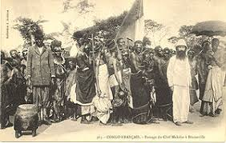
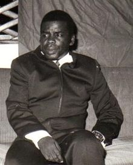
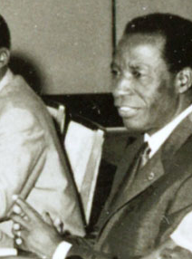

The Republic of the Congo, also called Congo-Brazzaville, is a central African nation with rainforest reserves that are habitats for gorillas.
Its capital city, Brazzaville, lies across the Congo River from Kinshasa, the capital of neighboring Democratic Republic of the Congo. Brazzaville's highlights include traditional craft markets and the mid-20th-century Basilique Sainte-Anne, with a green-tiled roof and spire.Capital: Brazzaville
The Republic of the Congo received full independence from France on 15 August 1960. Youlou ruled as the country's first president until labour elements and rival political parties instigated a three-day uprising that ousted him.[17] The Congolese military briefly took charge of the country, and installed a civilian provisional government headed by Alphonse Massamba-Débat. Under the 1963 constitution, Massamba-Débat was elected President for a five-year term.[8] During Massamba-Débat's term in office the regime adopted "scientific socialism" as the country's constitutional ideology.[18] In 1965, Congo established relations with the Soviet Union, the People's Republic of China, North Korea and North Vietnam.[18] Massamba-Débat's regime also invited several hundred Cuban army troops into the country to train his party's militia units and these troops helped his government survive a coup d'état in 1966 led by paratroopers loyal to future President Marien Ngouabi. Nevertheless, Massamba-Débat was unable to reconcile various institutional, tribal and ideological factions within the country[18] and his regime ended abruptly with a bloodless coup in September 1968. Marien Ngouabi changed the country's name to the People's Republic of the Congo, declaring it to be Africa's first Marxist–Leninist state. He was assassinated in 1977. Ngouabi, who had participated in the coup, assumed the presidency on 31 December 1968. One year later, President Ngouabi proclaimed Congo Africa's first "people's republic", the People's Republic of the Congo, and announced the decision of the National Revolutionary Movement to change its name to the Congolese Labour Party (PCT). He survived an attempted coup in 1972 but was assassinated on 16 March 1977. An 11-member Military Committee of the Party (CMP) was then named to head an interim government, with Joachim Yhombi-Opango to serve as President of the Republic. Two years later, Yhombi-Opango was forced from power and Denis Sassou Nguesso become the new president.[8] Sassou Nguesso aligned the country with the Eastern Bloc and signed a twenty-year friendship pact with the Soviet Union. Over the years, Sassou had to rely more on political repression and less on patronage to maintain his dictatorship.[19] Pascal Lissouba, who became Congo's first elected president (1992–1997) during the period of multi-party democracy, attempted to implement economic reforms with IMF backing to liberalize the economy. In June 1996, the IMF approved a three-year SDR69.5m (US$100m) enhanced structural adjustment facility (ESAF) and was on the verge of announcing a renewed annual agreement when civil war broke out in Congo in mid-1997.[20] Congo's democratic progress was derailed in 1997, when Lissouba and Sassou started to fight for power in the civil war. As presidential elections scheduled for July 1997 approached, tensions between the Lissouba and Sassou camps mounted. On 5 June, President Lissouba's government forces surrounded Sassou's compound in Brazzaville and Sassou ordered members of his private militia (known as "Cobras") to resist. Thus began a four-month conflict that destroyed or damaged much of Brazzaville and caused tens of thousands of civilian deaths. In early October, the Angolan régime began an invasion of Congo to install Sassou in power. In mid-October, the Lissouba government fell. Soon thereafter, Sassou declared himself president.[8] A pro-constitutional reform rally in Brazzaville during October 2015. The constitution's controversial reforms were subsequently approved in a disputed election which saw demonstrations and violence. In the controversial elections in 2002, Sassou won with almost 90% of the vote cast. His two main rivals, Lissouba and Bernard Kolelas, were prevented from competing and the only remaining credible rival, André Milongo, advised his supporters to boycott the elections and then withdrew from the race.[21] A new constitution, agreed upon by referendum in January 2002, granted the president new powers, extended his term to seven years, and introduced a new bicameral assembly. International observers took issue with the organization of the presidential election and the constitutional referendum, both of which were reminiscent in their organization of Congo's era of the one-party state.[22] Following the presidential elections, fighting restarted in the Pool region between government forces and rebels led by Pastor Ntumi; a peace treaty to end the conflict was signed in April 2003.[23] Sassou also won the following presidential election in July 2009.[24] According to the Congolese Observatory of Human Rights, a non-governmental organization, the election was marked by "very low" turnout and "fraud and irregularities".[25] In March 2015 Sassou announced that he wanted to run for yet another term in office and a constitutional referendum in October resulted in a changed constitution which allowed him to run during the 2016 presidential election. He won the election believed by many to be fraudulent. After violent protests in the capital, Sassou attacked the Pool region, where the Ninja rebels of the civil war used to be based, in what was believed to be a distraction. This led to a revival of the Ninja rebels who launched attacks against the army in April 2016, leading 80,000 people to flee their homes. A ceasefire deal was signed in December 2017.[26]
  .jpg)